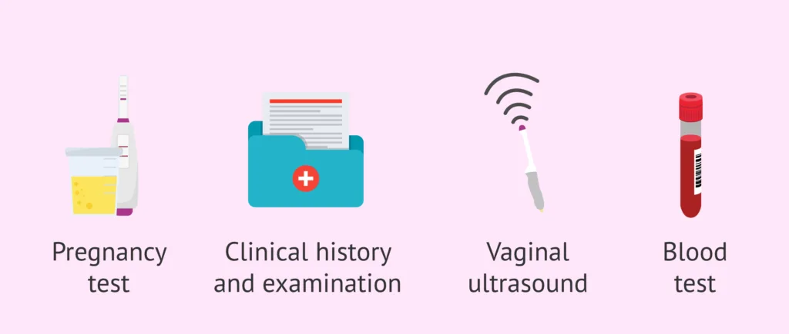
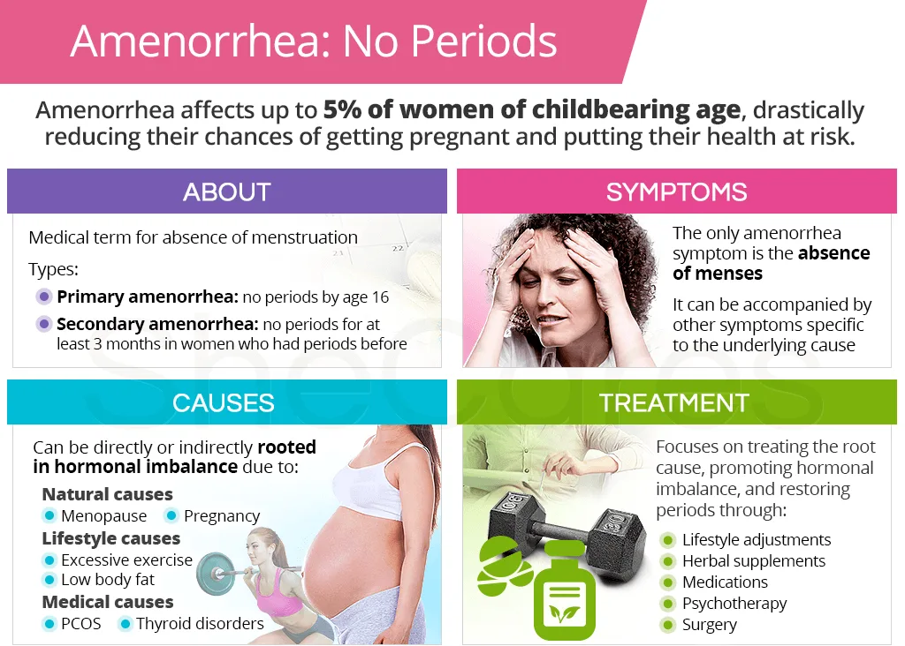

Expanded Nursing Uganda Explanation
Amenorrhoea should be understood beyond a short definition. Link the concept to patient history, focused assessment, common risks, nursing priorities, documentation and evaluation of outcomes.
01 Types of Amenorrhoea
Primary amenorrhoea is failure to menstruate by the age of 16 in the presence of normal secondary sexual development.
The absence of menses by age 14 in the absence of normal secondary sexual characteristics.
Causes of Primary Amenorrhoea
1. Excessive Weight Loss : Reduction in body weight due to factors like restrictive diets or eating disorders which can lead to Disruption of hormonal balance crucial for menstruation.
2. Excessive Exercise or Stress : Intense physical activity or chronic stress may disrupt the normal hormonal fluctuations necessary for the menstrual cycle.
3. Physiological Delay : Family History: A delay in menstruation initiation, reported through family history, may contribute to a genetically influenced delay in onset.
4. Imperforate Hymen : The hymen, a thin membrane at the vaginal opening, is imperforate, obstructing menstrual blood outflow, hence retention of menstrual blood in the vagina.
5. Eating Disorders : Conditions like anorexia nervosa or bulimia may lead to nutritional deficiencies impacting reproductive hormones.
6. Thyroid Dysfunction : Disorders affecting the thyroid gland can disrupt the hormonal balance necessary for regular menstrual cycles.
7. Genetic Factors : Certain genetic syndromes or chromosomal abnormalities can impact reproductive development, delaying the onset of menstruation.
8. Chronic Illnesses : Long-term illnesses affecting various body systems can interfere with the hormonal balance required for menstruation.
9. Anatomical Abnormalities : Structural abnormalities in the reproductive organs such as Uterine or Ovarian Issues may hinder the normal menstrual process.
10. Hormonal Imbalances : Abnormalities in hormones like FSH (Follicle Stimulating Hormone) or LH (Luteinizing Hormone) crucial for puberty and menstruation.
11. Tumors or Growths : Non-cancerous growths or tumors affecting the ovaries or pituitary gland can disrupt hormonal balancing.
12. Medication Side Effects : Prolonged use or abrupt discontinuation of certain medications, such as hormonal contraceptives, may impact menstrual patterns.
13. Celiac Disease : Celiac disease, affecting nutrient absorption, may lead to disruptions in hormonal balance affecting menstruation.
Pregnancy should be ruled out in a patient who presents with secondary amenorrhoea.
Normal physiology:
- Pregnancy : During pregnancy, high levels of estrogen and progesterone maintain the endometrium, leading to amenorrhea.
- Lactation : After delivery, prolactin is secreted in large quantities, partially suppressing LH production and preventing ovulation, resulting in amenorrhea.
Abnormal physiology:
- Functional hypothalamic amenorrhea : Lower levels of FSH and LH due to hypothalamic dysfunction can lead to secondary amenorrhea. This condition may exclude organic diseases and exhibit abnormal GnRH secretion, low/normal LH concentrations, absent follicular development, and anovulation.
- Premature Ovarian Failure : Accelerated atresia and dysfunction of follicular maturation can cause premature ovarian failure, leading to secondary amenorrhea.
- Birth control pills : Hormonal birth control can affect menstrual cycles and cause secondary amenorrhea.
- Malnutrition : Inadequate nutrition can disrupt hormone levels and lead to secondary amenorrhea.
- Psychogenic factors : Emotional stress and psychological factors can impact hormonal balance, potentially causing secondary amenorrhea.
- Infections (e.g., PID): Infections like pelvic inflammatory disease can disrupt normal reproductive function, leading to secondary amenorrhea.
- Polycystic ovarian syndrome : PCOS can cause hormonal imbalances, leading to irregular menstrual cycles and potential secondary amenorrhea.
- Emergency contraceptive pills : These pills can affect hormone levels and disrupt the menstrual cycle, potentially leading to secondary amenorrhea.
- Diabetes mellitus : Poorly controlled diabetes can impact hormone levels and lead to secondary amenorrhea.
- Resistant ovarian syndrome : This condition can lead to hormonal imbalances and disrupt the menstrual cycle, potentially causing secondary amenorrhea.
- Radiation : Full doses of radiation can disrupt normal ovarian function, leading to secondary amenorrhea.
- Drugs : Certain medications, especially hormonal contraceptives, can impact hormone levels and cause secondary amenorrhea.
- Head injury : Traumatic head injuries can disrupt normal hormonal regulation, potentially leading to secondary amenorrhea.
- Debilitating diseases: Conditions such as tuberculosis (TB), HIV/AIDS, and diabetes mellitus can disrupt normal hormonal balance, potentially leading to secondary amenorrhea.
- Tumors of the pituitary gland, hypothalamus, ovaries, and uterus: Tumors in these reproductive and endocrine organs can disrupt normal hormonal function, leading to secondary amenorrhea.
- Early onset of menopause : Premature menopause can cause secondary amenorrhea.
- Idiopathic : In some cases, the cause of secondary amenorrhea may be unknown or unidentifiable.
02 Diagnosis and Investigation
Amenorrhoea is diagnosed by taking a proper history (history of change in weight, presence of stress, questions about excessive weight, presence of excessive body or facial hair)and physical examination.
The laboratory investigations are carried out to help identify the cause of amenorrhea and to rule out other causes.
- Investigation Remarks
- Luteinizing hormone (LH) LH is slightly elevated in the case of polycystic ovary syndrome.
- Follicle stimulating hormone (FSH) FSH is usually very high in the case of premature menopause.
- Total testosterone levels Testosterone level is slightly raised in polycystic ovary syndrome.
- Thyroid stimulating hormone (TSH) Helps to rule out hypothyroidism as a cause of amenorrhea.
- Measurement of prolactin levels High levels of prolactin are associated with hyperprolactinemia.
- HCG test It is used to rule out pregnancy.
- Cessation of Menses : The cessation of menstrual cycles is a primary and defining symptom of amenorrhea. It can be either primary (absence of menstruation by the age of 16) or secondary (absence of menstruation for three consecutive cycles in a woman who previously had regular periods).
- Complaints of Infertility : Many women with amenorrhea may experience difficulties in conceiving (infertility). The absence of regular menstrual cycles can indicate underlying hormonal imbalances or reproductive system disorders, affecting the ability to conceive.
- Vaginal Dryness and Decreased Libido : Hormonal imbalances associated with amenorrhea, such as low oestrogen levels, can lead to changes in vaginal moisture and lubrication, resulting in vaginal dryness. Additionally, decreased oestrogen levels may contribute to a reduced libido or interest in sexual activity.
- Recent Excessive Weight Loss or Weight Gain: Amenorrhea can be linked to changes in body weight. Sudden and significant weight loss, as seen in eating disorders or excessive exercise, can disrupt the hormonal balance, leading to amenorrhea. Conversely, rapid weight gain, especially in conditions like polycystic ovary syndrome (PCOS), can also impact menstrual regularity.
- Presence of Acne and Hirsutism: Hormonal disorders such as PCOS, characterized by elevated androgen levels, may present with symptoms like acne (skin condition) and hirsutism (excessive hair growth, especially in male-pattern areas). These symptoms can be indicative of hormonal disturbances contributing to amenorrhea.
- Galactorrhea (Breast Milk Discharge): In some cases, elevated prolactin levels, a hormone responsible for milk production, can lead to galactorrhea (spontaneous discharge of milk from the breasts), which may accompany amenorrhea.
- Pelvic Pain or Headaches : Certain underlying conditions causing amenorrhea, such as pituitary tumors or ovarian cysts, may present with symptoms like pelvic pain or headaches.
- Mood Changes and Fatigue : Hormonal imbalances associated with amenorrhea can influence mood, leading to mood swings or changes. Fatigue may also be experienced due to disruptions in hormonal regulation.
03 Management of Amenorrhoea
This will depend on the cause. It may be medical, surgical, or psychological.
- Assessment : Conducting a comprehensive evaluation of the woman’s medical and menstrual history, as well as performing a physical examination to identify the underlying cause of amenorrhea.
- Emotional Support: Offering empathetic and non-judgmental support to address any emotional distress associated with the condition.
- Education : Providing information on menstrual health, reproductive anatomy and physiology, and the potential causes and treatment options for amenorrhea.
- Lifestyle Modifications : Encouraging women to adopt a healthy lifestyle, including regular exercise, balanced nutrition, stress reduction, and sufficient sleep, as these factors can contribute to hormonal balance regulation.
- Contraception Counselling : Discussing contraceptive methods and family planning options to prevent unintended pregnancies.
- Hormone Therapy : If hormonal imbalance, such as polycystic ovary syndrome or hypothalamic dysfunction, is determined as the cause of amenorrhea, hormone therapy may be prescribed to regulate hormone levels and restore menstruation.
- Medications : Certain medications like progestins or combined oral contraceptives may be prescribed to induce menstruation or regulate the menstrual cycle.
- Treatment of Underlying Conditions : If amenorrhea is a result of an underlying medical condition, such as a thyroid disorder or a pituitary tumour, appropriate medical treatment will be initiated to address the specific condition.
- Hyperprolactinemia is treated by administration of bromocriptine 2.5mg 2-3 times daily which reduces prolactin levels which results into resuming of menstruation. Bromocriptine is an ergot alkaloid which directly opposes prolactin secretion. Radiotherapy is reserved for those patients who fail to respond to medical therapy.
- Amenorrhoea due to polycystic ovary syndrome (PCO) Recommend Metformin 500mg 3 times daily which reduces insulin resistance.
- Hysteroscopic Surgery : This minimally invasive procedure involves the insertion of a thin, illuminated tube called a hysteroscope through the vagina and cervix to visualize and treat abnormalities within the uterus, such as polyps or adhesions.
- Imperforate hymen is treated by incision and drainage. Very large amount of blood may be released, and if the septum is particularly thick, some form of plastic operation may be required.
- Surgical Intervention : In some instances, surgical intervention may be essential to correct structural abnormalities in the reproductive organs or to remove tumours or cysts that are interfering with normal menstruation.
- Counselling : Offering psychological counselling or referring women to mental health professionals who can assist them in coping with the emotional distress associated with amenorrhea.
- Support Groups: Suggesting participation in support groups or facilitating connections with other women who have faced similar challenges to foster a sense of community and validation.
- Body Image and Self-esteem: Addressing concerns related to body image and promoting a positive self-image by emphasizing that amenorrhea does not define femininity or a woman’s worth.
NB ; Management of gynaecology conditions can be in the maternity centre and hospital. In the maternity centre investigations and operations may not be done from that place.
The maternity centre can manage some cases e.g. pregnancy, stress, lactational causes of amenorrhoea however the diagnosis of some causes of amenorrhoea that involves investigations are referred to the hospital.
04 Nursing Uganda Clinical Lens
Use Amenorrhoea as a practical nursing topic, not only a memorized definition. Start with normal structure and function, then connect it to assessment findings and disease.
- What to understand first: define amenorrhoea, identify the normal or expected pattern, then explain what changes when the patient is unwell.
- Why it matters in care: the nurse must recognize risk early, explain findings clearly, document accurately and know when to escalate.
- How to revise it: connect each point to assessment, nursing diagnosis or care problem, intervention, rationale and evaluation.
05 Assessment Guide
- Relevant inspection, palpation, movement, auscultation, vital signs or neurological checks.
- Normal findings, abnormal findings and what each abnormality may indicate.
- Patient history, risk factors and how the body system affects other systems.
06 Nursing Priorities, Rationales and Outcomes
- Use anatomy to explain symptoms and guide focused assessment.
- Recognize findings that need urgent escalation.
- Teach the patient using simple body-system language.
The rationale for these priorities is patient safety: nursing actions should prevent deterioration, reduce discomfort, support recovery and create clear evidence for the next caregiver.
- Expected outcome: The learner can explain normal function, identify abnormal signs and connect them to nursing action.
07 Patient Teaching and Revision Check
- Explain amenorrhoea in simple language the patient or caregiver can repeat back.
- Teach warning signs, medicine or follow-up instructions, hygiene or lifestyle points where relevant.
- For exams, prepare a short answer using: definition, causes or risk factors, signs, assessment, management, complications and prevention.
- For ward practice, document baseline findings, actions taken, patient response and the plan for review.
Illustrations and Diagrams (6)





Related Video Lectures
Watch nursing lecture videos on YouTube for this topic. Opens in a new tab.
Watch on YouTubeExternal link: YouTube may use its own cookies and terms. Nursing Uganda is not affiliated with YouTube.